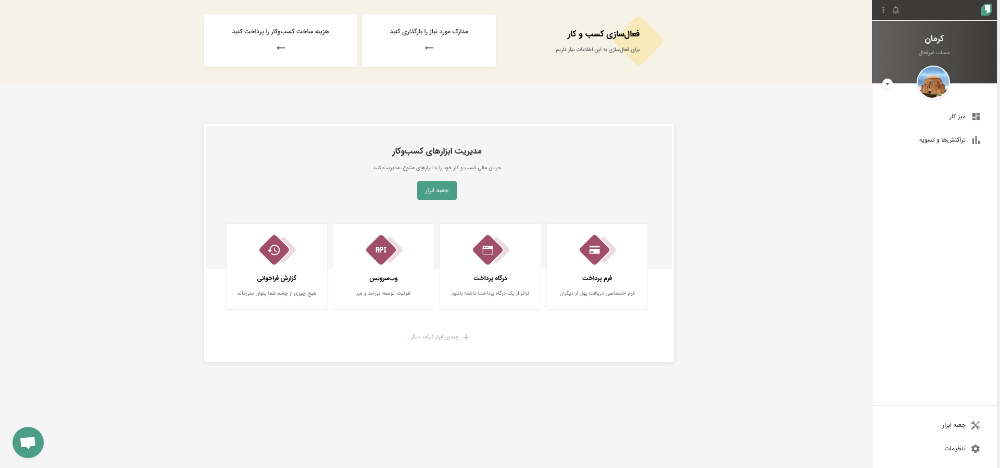
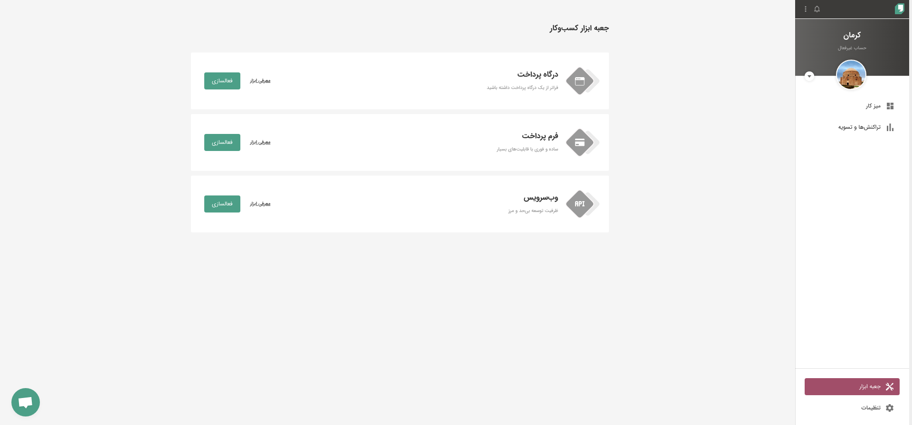
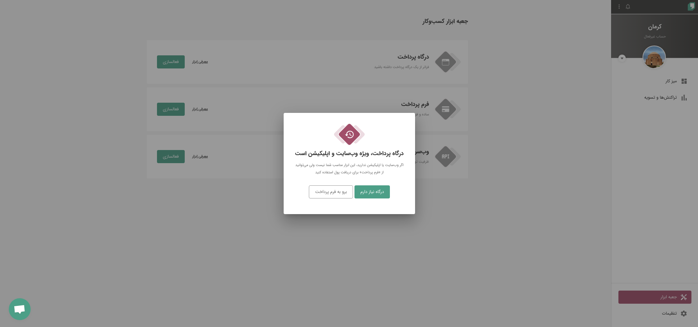
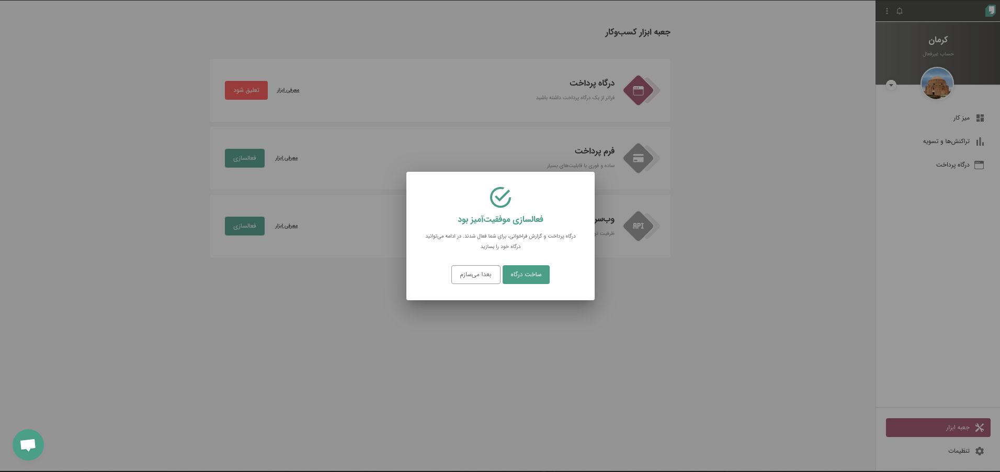
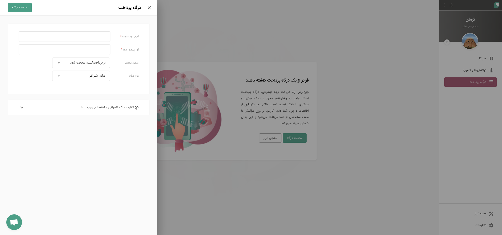
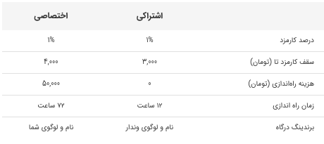
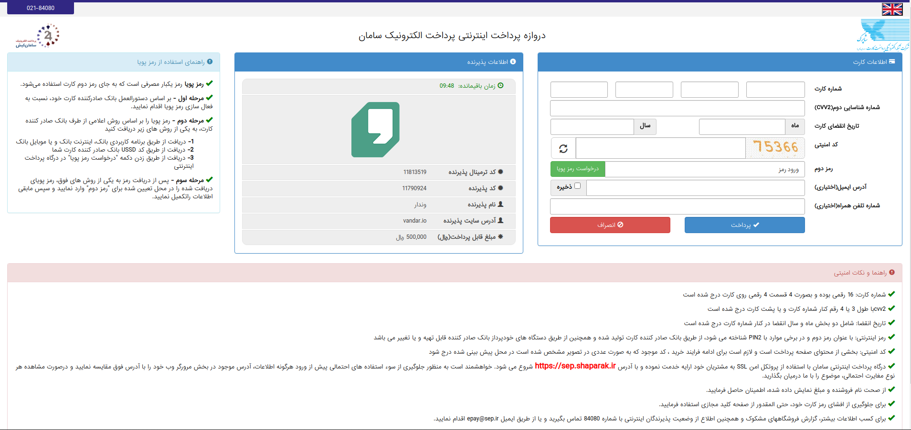
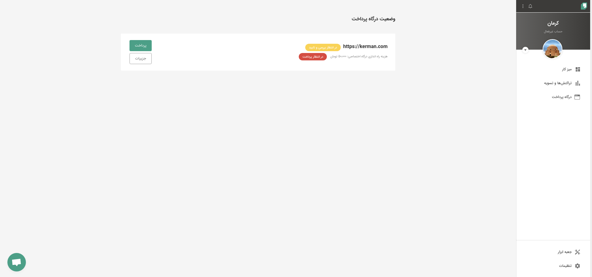
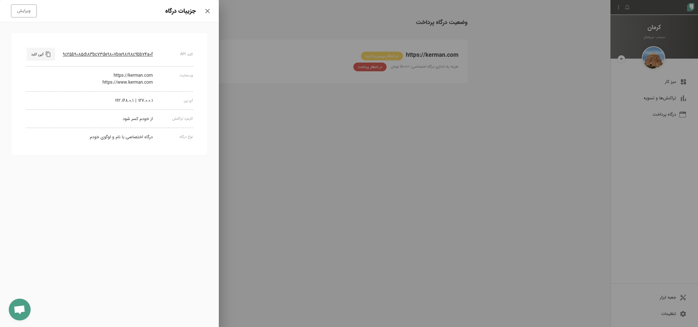
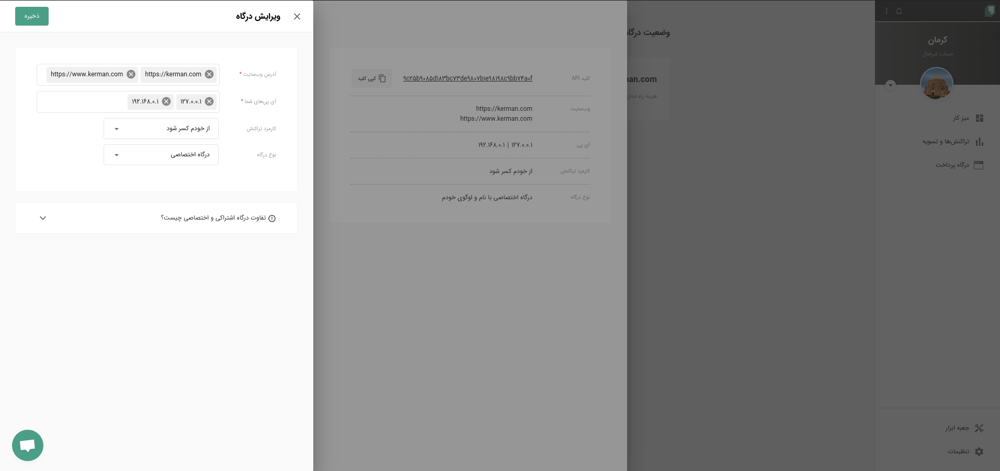

ساخت و ویرایش درگاه پرداخت
فعال کردن درگاه پرداخت
صفحه اولی که بعد از ساخت کسب و کار میبینید این صفحه است. که با استفاده از لینک جعبه ابزار وارد صفحه جعبه ابزار شوید. منو جعبه ابزار همیشه از منو سمت راست در دسترس است.
برای شروع ساخت درگاه پرداخت بر روی دکمه فعال سازی کلیک کنید.
صفحه ای که برای شما باز میشود از شما تایید نهایی برای ساخت درگاه را میگیرد.
این صفحه به شما نشان میدهد که درگاه پرداخت شما فعال شده و حال باید درگاه پرداخت را بسازید و تنظیمات آن را انجام دهید.
بعد از کلیک روی ساخت درگاه از این قسمت باید تنظیمات درگاه پرداخت را وارد کنید. آدرس وبسایت حتما باید به http یا https وارد شود.
بعد از پر کردن آدرس وبسایت و آیپی باید درگاه مشخص کنید که کارمزد از شما کم شود یا از مشتری شما. و در نهایت مشخص میکنید که آیا درگاه پرداخت اشتراکی میخواهید و یا اختصاصی.

تفاوت درگاه اختصاصی و یا اشتراکی چیست؟
اگر درگاه پرداخت اختصاصی را انتخاب کنید برای پرداخت کارمزد فعال سازی درگاه اختصاصی به صفحه بانک هدایت میشوید.
اگر درگاه اشتراکی را انتخاب کردید فعال سازی تا ۱۲ ساعت زمان میبرد و اگر اختصاصی باشد فعال سازی تا ۷۲ ساعت زمان میبرد.
همیشه از بخش جزییات به تنظیمات درگاه پرداخت دسترسی دارید. و کلید API صادر شده برای پیاده سازی فنی همیشه از این بخش در دسترسی است.
برای ویرایش جزییات درگاه میتوانید از کلید ویرایش استفاده کنید.
پیاده سازی فنی درگاه پرداخت
مقدمه
برای فروشـگاههای اینترنتی که خدمات یا محصولاتی را در وبسـایت خود ارائه میکنـند، از درگاه پرداخت وندار استفاده کنید.
قبل از شروع پیاده سازی بهتر است یک بار فرایند پرداخت را با هم مرور کنیم.
- مرحله اول: ارسال اطلاعات تراکنش و دریافت توکن پرداخت.
- مرحله دوم: انتقال کاربر به صفحه پرداخت با توکنی که از مرحله اول دریافت کردید.
- مرحله سوم (اختیاری): قبل از تایید تراکنش اطلاعات تراکنش را دریافت میکنید.
- مرحله چهارم: بعد از فرایند پرداخت کاربر به آدرسی بازگشتی که در مرحله اول ارسال کردید، برمیگردد. و شما برای نهایی شدن تراکنش حتما باید متد وریفای تراکنش رو صدا بزنید. و نتیجه نهایی تراکنش را دریافت کنید. (پایان تراکنش)
این چهار مرحله کلی مقدمه سه نکته مهم است که توجه شما را به این نکات جلب میکنم.
به هیچ عنوان در ورودی و خروجی ها تغییر داده نشده است. پس فقط با تغییر آدرس میتوانید به ورژن ۳ مهاجرت کنید.
مرحله اول: ارسال اطلاعات و دریافت توکن
در مرحله اول باید پارامترهای موجود در جدول زیر را با متد POST به آدرسی که مشخص شده ارسال کنید. به نوع دادهها و نام فیلد توجه کنید. اگر برای فیلد شماره موبایل، شماره موبایل کاربر را به درگاه ارسال نمایید، کاربر به صورت خودکار به صفحه پرداخت درگاه موبایلی هدایت میشود، به این معنی که در صفحهی درگاه پرداخت بر مبنای شماره موبایل کاربر فهرست کارتهای ذخیره شدهاش در PSP نمایش داده میشود.
METHOD: post URL: https://ipg.vandar.io/api/v3/send
پارامترهای مجاز
| Name | Type | Status |
|---|---|---|
| api_key | string | required |
| amount | Integer | required |
| callback_url | String | required |
| mobile_number | String | optional |
| factorNumber | String | optional |
| description | String | optional |
| national_code | String | optional |
| valid_card_number | String | optional |
توضیحات
- api_key (اجباری): این کلید بعد از ساخت درگاه پرداخت صادر میشود. برای دریافت این کلید به داشبورد وندار مراجعه کنید.
- amount (اجباری): مبلغ تراکنش به صورت ریالی و بزرگتر یا مساوی 1000.
- callback_url (اجباری): باید با آدرس درگاه پرداخت تایید شده در وندار بر روی یک دامنه باشد.
- mobile_number (اختیاری): شماره موبایل (اختیاری، جهت نمایش کارت های خریدار به ایشان و نمایش درگاه موبایلی).
- factorNumber (اختیاری): شماره فاکتور شما (اختیاری).
- description (اختیاری): توضیحات (اختیاری، حداکثر 255 کاراکتر).
- national_code (اختیاری): کد ملی معتبر (در صورت ارسال کد ملی، کاربر فقط با کارتهای بانکی تحت مالکیت آن کد ملی قابلیت پرداخت خواهد داشت).
- valid_card_number (اختیاری): شماره کارت معتبر (در صورت ارسال شماره کارت، کاربر فقط با همان شماره کارت قابلیت پرداخت خواهد داشت).
نمونه json
{
"api_key": "کلید درگاه پرداخت دریافتی از پنل",
"amount": 1000,
"callback_url": "https://example.com/callback",
"mobile_number": "09123456789",
"factorNumber": "12345",
"description": "توضیحات دلخواه",
"national_code": "کد ملی پرداخت کننده",
"valid_card_number": "شماره کارت معتبر",
}
نمونه پاسخ دریافتی موفق
HTTP/1.1 200 { "status": 1, "token": "توکن پرداختی که در مراحل بعدی مورد استفاده قرار میگیرد.", }
- status: مقدار 0 و 1 دارد که نشان دهنده موفقیت آمیز بودن درخواست است.
- token: یک رشته از حروف و اعداد است با طول متغییر، که توکن پرداخت است و باید سمت پذیرنده نگهداری شود.
نمونه پاسخ دریافتی ناموفق
HTTP/1.1 4xx { "status": 0, "errors": [ "وارد کردن api key الزامی است", "api_key معتبر نیست", "IP پذیرنده معتبر نیست", "وارد کردن callback_url الزامی است", "callback_url معتبر نیست", "وارد کردن amount الزامی است", "amount نباید کوچکتر از 1000 باشد", "amount باید عدد یا رشتهای از اعداد باشد", "کد ملی قابل قبول نیست.", "شماره کارت قابل قبول نیست.", "شناسه ملی باید 10 رقم باشد.", ] }
- status: مقدار 0 و 1 دارد که نشان دهنده موفقیت آمیز بودن درخواست است.
- errors: آرایه ای از خطاها.
مرحله دوم: انتقال کاربر به صفحه پرداخت
اگر در مرحله ارسال اطلاعات، اطلاعات ارسالی صحیح باشد و دو مقدار status و token را دریافت کرده باشید. باید کاربر را به شیوهی زیر به درگاه redirect کنید. برای این کار باید عددی که در مرحله اول در متغیر {token} دریافت کردید را در آخر آدرس قرار دهید و کاربر را به URL ایجاد شده redirect کنید تا بلافاصله کاربر به درگاه پرداخت هدایت شده و سپس مرحله سوم را انجام دهید.
METHOD: get URL: https://ipg.vandar.io/v3/{token}
 اگر payment_status مقداری غیر از OK داشت همینجا میتوانید فرایند پرداخت را متوقف کنید. اما اگر OK (با حروف بزگ) بود باید تصمیم بگیرید که آیا برای تکمیل تراکنش به مشخصات تراکنش مانند هش شماره کارت نیاز دارید یا خیر. اگر نیاز دارید بعد از این مرحله باید مرحله سوم و بعد چهارم را پیاده سازی کنید. اگه نیاز ندارید، مرحله سوم را نادیده بگیرید و مرحله آخر که تایید تراکنش است را پیاده سازی کنید.
اگر payment_status مقداری غیر از OK داشت همینجا میتوانید فرایند پرداخت را متوقف کنید. اما اگر OK (با حروف بزگ) بود باید تصمیم بگیرید که آیا برای تکمیل تراکنش به مشخصات تراکنش مانند هش شماره کارت نیاز دارید یا خیر. اگر نیاز دارید بعد از این مرحله باید مرحله سوم و بعد چهارم را پیاده سازی کنید. اگه نیاز ندارید، مرحله سوم را نادیده بگیرید و مرحله آخر که تایید تراکنش است را پیاده سازی کنید.
مرحله سوم: دریافت اطلاعات تراکنش
با فراخوانی این سرویس همانطور که قبلا توضیح داده شده، شما اطلاعات تراکنش را دریافت میکنید و در صورت نیاز این اطلاعات را قبل تایید و نهایی شدن تراکنش صحت سنجی میکنید.
METHOD: post URL: https://vandar.io/api/ipg/2step/transaction
پارامترهای مجاز
| Name | Type | Status |
|---|---|---|
| api_key | string | required |
| token | string | required |
توضیحات
- api_key (اجباری): این کلید بعد از ساخت درگاه پرداخت صادر میشود. برای دریافت این کلید به داشبورد وندار مراجعه کنید.
- token (اجباری): همان توکن پرداختی که در مرحله یک دریافت کردید و در این مرحله از به صورت انتهای آدرس بازگشتی اضافه شده است.
نمونه پاسخ دریافتی موفق
HTTP/1.1 200
{
"status": 1,
"amount": "10000",
"transId": 155058785697,
"refnumber": "GmshtyjwKSuZXT81+6o9nKIkOcW*****PY05opjBoF",
"trackingCode": "23***6",
"factorNumber": null,
"mobile": null,
"description": "description",
"cardNumber": "603799******6299",
"CID": "ECC1F6931DDC1B8A0892293774836F3FFAC4A3C9D34997405F340FCC1BDDED82",
"paymentDate": "2019-02-19 18:21:50",
"message": "Confirm requierd"
}
- status: مقدار 0 و 1 دارد که نشان دهنده موفقیت آمیز بودن درخواست است.
- amount: مبلغ تراکنش که ممکن است با مبلغ تراکنشی که در مرحله اول ارسال کرده باشید متفاوت باشد. اگر کارمزد تراکنش بر عهده پرداخت کننده باشد مبلغ کارمزد هم به مبلغ تراکنش ارسالی از سمت شما اضافه شده است.
- transId: شناسه یکتای پرداخت که برای پیگیری تراکنش از وندار مورد استفاده قرار میگیرد.
- refnumber: رسید دیجیتال یکتا در شبکه پرداخت کشور.
- trackingCode: کد رهگیری به همراه تاریخ انجام تراکنش یکتا است.
- factorNumber: شماره فاکتوری که شما در مرحله اول ارسال کردید.
- description: توضیحاتی که شما در مرحله اول ارسال کردید.
- cardNumber: ماسکه شده شماره کارت پرداخت کننده.
- CID: هش شماره کارت که با الگوریتم SHA256 هش شده است.
- paymentDate: تاریخ انجام تراکنش.
- message: وضعیت تراکنش.
نمونه پاسخ دریافتی ناموفق
HTTP/1.1 4xx
{
"status": 0,
"errors": [
"وارد کردن api key الزامی است",
"api_key معتبر نیست",
"IP پذیرنده معتبر نیست",
"وارد کردن token الزامی است",
"token معتبر نیست",
"تراکنش با خطا مواجه شده است"
]
}
- status: مقدار 0 و 1 دارد که نشان دهنده موفقیت آمیز بودن درخواست است.
- errors: آرایه ای از خطاها.
مرحله چهارم: تایید تراکنش
آخرین مرحله و تمام کننده یک چرخه پرداخت در شبکه پرداخت وندار تایید تراکنش است. مهمترین نکته این مرحله این است که این سرویس به ازای هر تراکنش و برای جلوگیری از تکرار تراکنش فقط و فقط یک بار پاسخ میدهد.
METHOD: post URL: https://ipg.vandar.io/api/v3/verify
پارامترهای مجاز
| Name | Type | Status |
|---|---|---|
| api_key | string | required |
| token | string | required |
توضیحات
- api_key (اجباری): این کلید بعد از ساخت درگاه پرداخت صادر میشود. برای دریافت این کلید به داشبورد وندار مراجعه کنید.
- token (اجباری): همان توکن پرداختی که در مرحله یک دریافت کردید و در این مرحله از به صورت انتهای آدرس بازگشتی اضافه شده است.
نمونه پاسخ دریافتی موفق
HTTP/1.1 200
{
"status": 1,
"amount": "1000.00",
"realAmount": 500,
"wage": "500",
"transId": 159178352177,
"factorNumber": "12345",
"mobile": "09123456789",
"description": "description",
"cardNumber": "603799******7999",
"paymentDate": "2020-06-10 14:36:30",
"cid": null,
"message": "ok"
}
- status: مقدار 0 و 1 دارد که نشان دهنده موفقیت آمیز بودن درخواست است.
- amount: مبلغ تراکنش که ممکن است با مبلغ تراکنشی که در مرحله اول ارسال کرده باشید متفاوت باشد. اگر کارمزد تراکنش بر عهده پرداخت کننده باشد. مبلغ کارمزد هم به مبلغ تراکنش ارسالی از سمت شما اضافه شده است.
- realAmount: مبلغی که بر اساس این تراکنش کیف پول شما بالا رفته است.
- wage: کارمزد تراکنش.
- transId: شناسه یکتای پرداخت که برای پیگیری تراکنش از وندار مورد استفاده قرار میگیرد.
- factorNumber: شماره فاکتوری که شما در مرحله اول ارسال کردید.
- mobile: شماره موبایل پرداخت کننده که در حرحله اول ارسال کردید.
- description: توضیحاتی که شما در مرحله اول ارسال کردید.
- cardNumber: ماسکه شده شماره کارت پرداخت کننده.
- paymentDate: تاریخ انجام تراکنش.
- cid: هش شماره کارت که با الگوریتم SHA256 هش شده است.
- message: وضعیت تراکنش.
نمونه پاسخ دریافتی ناموفق
HTTP/1.1 4xx
{
"status": 0,
"errors": [
"نتیجه تراکنش قبلا از طرف وندار اعلام گردیده.",
"وارد کردن api key الزامی است",
"api_key معتبر نیست",
"IP پذیرنده معتبر نیست",
"وارد کردن token الزامی است",
"token معتبر نیست",
"تراکنش با خطا مواجه شده است"
]
}
- status: مقدار 0 و 1 دارد که نشان دهنده موفقیت آمیز بودن درخواست است.
- errors: آرایه ای از خطاها.